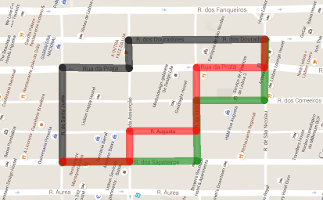

Pelos caminhos de Lisboa |
|
|
 A baixa da cidade de Lisboa, conhecida por baixa Pombalina, é famosa pela organização das suas ruas em quarteirões, em que as ruas formam uma malha de ruas paralelas e perpendiculares. Por uma questão de simplificação, imagine que a cada esquina é atribuído um par de números que a identifica univocamente. Por exemplo, à esquina no canto inferior esquerdo atribuímos o par (1,1); as esquinas à direita desta (mas na mesma rua) ficariam com os pares (2, 1), (3, 1), (4, 1), e assim sucessivamente. A rua acima desta teria as suas esquinas numeradas com (1, 2), (2, 2), (3, 2), (4, 2), etc. Acima desta vem a rua com as esquinas (1, 3), (2, 3), (3, 3), (4, 3), ... E assim sucessivamente para as ruas acima desta. Se um peão estiver na esquina (2, 3) e quiser deslocar-se até à esquina (4, 4) pode seguir vários caminhos. Por exemplo, subir e voltar à direita (que corresponde a passar pelas esquinas (2,3), (3,3), (4,3) e (4,4)); voltar à direita e depois subir ((2,3), (2, 4), (3, 4) e (4, 4)) ou subir, voltar à direita e subir de novo ((2,3), (3,3), (3, 4) e (4, 4)). O que não faz sentido é andar aos ziguezagues para trás e para a frente, que assim podemos nunca mais chegar ao destino. |
|